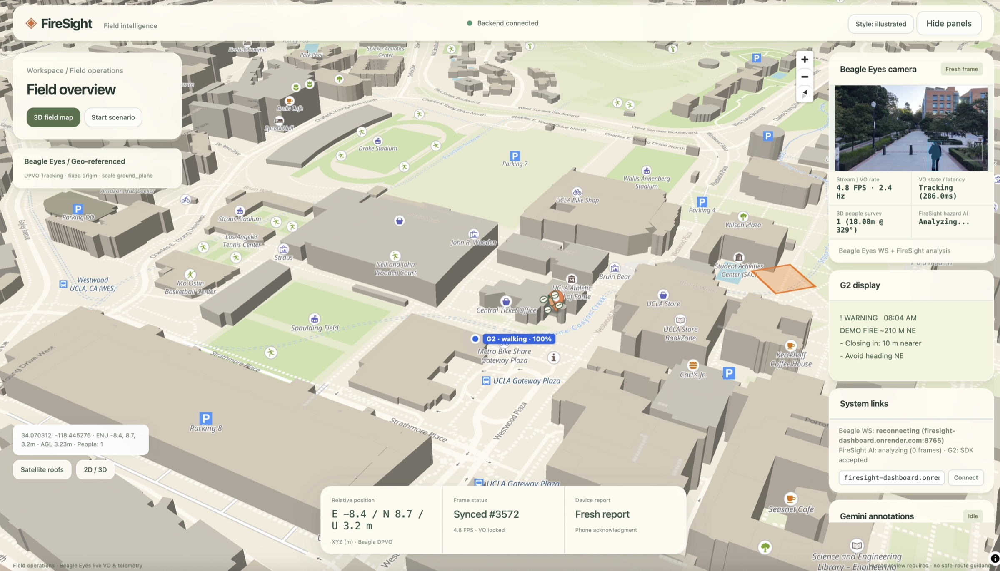
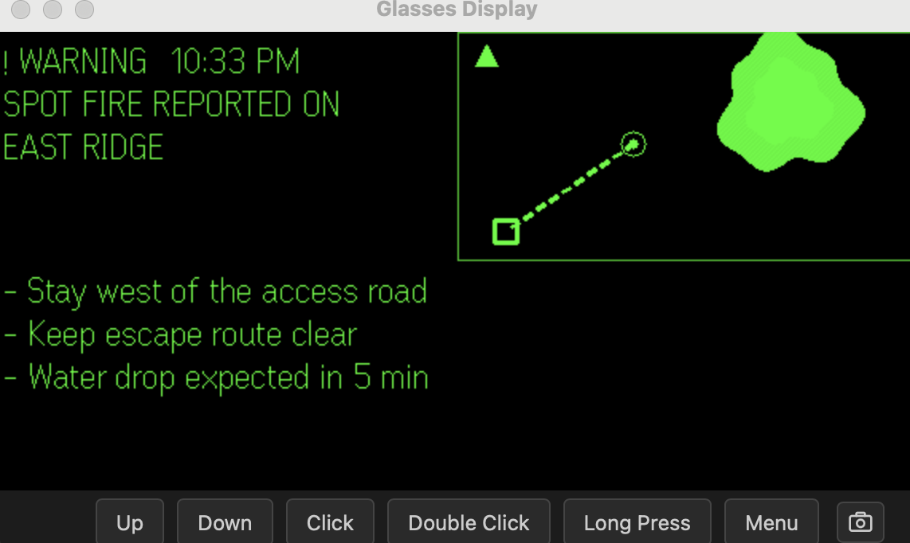
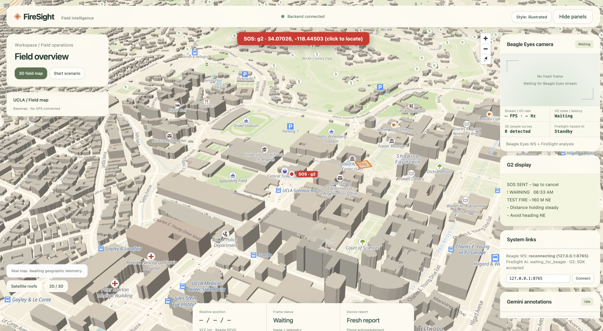
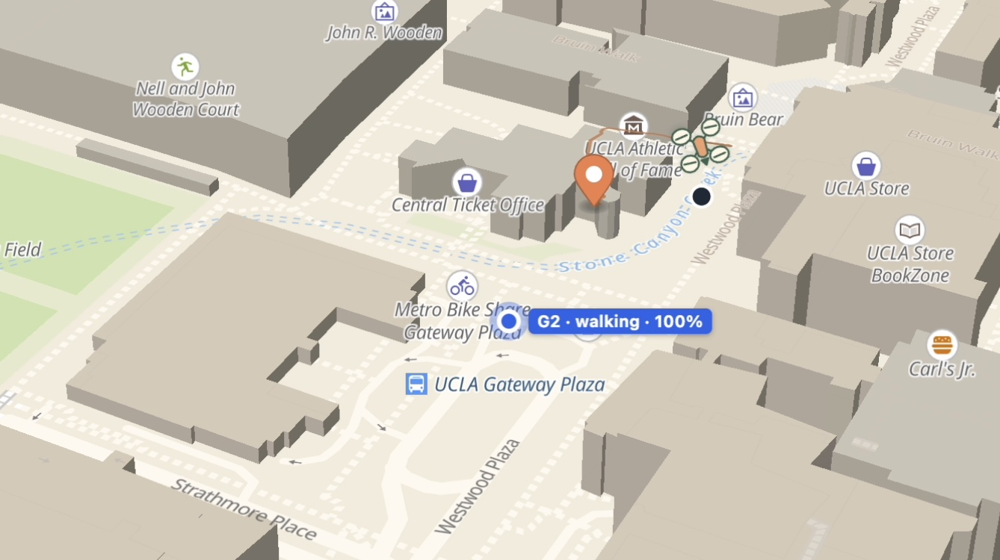

FireSight
Drones already see the fire. The people standing near it usually don't get that view. FireSight takes what a drone sees and puts it on smart glasses as one line of text the wearer can read without stopping.

The command dashboard: drone feed, AI-marked hazards, and every glasses wearer on one live map. Real screenshot.
01 / The Problem
The aerial view stops at a screen.
Think of a hiker on a ridge when smoke rolls in, or a firefighter on the line. They need three answers: where is the fire, how far away is it, and is it getting closer? Usually nobody can tell them.
Drones fly over wildfires every day, but their footage goes to a command post. Crews in the field hear about it secondhand over the radio. Tracking tools run on phones and tablets, so you have to stop and look down to use them. Burnovers, where a crew gets caught by an advancing fire front, have historically caused about one in five wildland firefighter deaths.
Problem statement How might someone near a fire get the drone's view of it, measured from where they're standing, without taking their eyes or hands off what they're doing?
02 / Research & Findings
Constraints decided the MVP.
I looked at what's already out there (command-post drone feeds, the Forest Service's TAK tracking pilot, helmet thermal displays), then tested on the real glasses early and often. Most of what shaped the product came from those hardware tests.
The info is about the fire, not about you
Today's tools tell you where the fire is. Someone on the ground needs distance and direction from their own position, updated as they move.
Existing tracking is slow and heads-down
In an early field pilot of the Forest Service's tracking tool, positions updated about every two minutes, and using it meant looking down at a screen.
The display is tiny
576×288 pixels, 16 shades of green, about nine short lines. Anything that isn't essential gets in the way.
The AI budget is tiny too
Gemini's free tier allowed about 20 calls a day. A demo that calls the model on every frame would use up the day's budget in seconds.
The hardware doesn't match the docs
Taps came in through a different event type than the docs showed, the startup page could only be created once, and the motion sensor stayed silent unless it was turned on after the display. I only found these by testing on the glasses myself.
Taking the glasses off looks like a fall
I recorded the accelerometer while standing, nodding, walking and taking the glasses off. Removing them spiked to 2.5 g, so a naive fall detector would trigger false alarms constantly.

03 / Strategic Insights
4 principles that shaped the product.
- Glanceable beats detailedA distance, a direction and a trend ("closing in") are more useful at a glance than any amount of footage.
- Relative to youEvery number is measured from the wearer's GPS position, not from a map someone else is looking at.
- Two-way, not broadcastThe glasses report back. A coordinator should know where everyone is and whether they saw the alert.
- State the limits plainlyIt's a safety tool, so positions are marked as approximate and it never claims precision it doesn't have. It's a prototype, not certified equipment.
04 / The Solution
FireSight: from drone to glasses and back.
A DJI drone streams live video into a visual-odometry pipeline (DPVO) that tracks the camera and puts each frame on the map with real GPS coordinates. Gemini vision models and OpenCV find fire and smoke in each frame and place them on that map. The glasses show the nearest hazard relative to the wearer and send their position and status back to a live dashboard.
Drone + vision
DJI, DPVO, GPS transform
Tracks where the camera is, so each detection can be placed on the map with real coordinates.
AI hazard mapping
Gemini VLM + OpenCV
Marks fire, smoke and hazards, then writes short alerts sized for the glasses.
G2 glasses app
TypeScript, Even Hub SDK
Nearest hazard, distance, direction, trend, mini-map. SOS and man-down built in.

How I developed the PRD
I wrote the PRD for the AI-to-wearable experience, then built the G2 glasses app against it myself. In a weekend build, the PRD's job is less about documentation and more about getting four people to agree on one demo before anyone writes code. This is how I put it together.
- Start from the wearer's three questionsWhere is it, how far, is it getting closer? Every feature had to answer one of them, or it didn't make the MVP.
- List the constraints before the featuresAbout 20 Gemini calls a day, a 576×288 display, no magnetometer, and SDK behavior that didn't match the docs. I scoped features to fit inside those limits instead of hoping the team could work around them later.
- Cut on purposeVoice reports, offline mode and read authentication were all reasonable ideas. I moved them to "next" so the team could ship one loop that worked end to end.
- Write acceptance criteria from the wearer's sideAn alert within seconds of opening the app, CRITICAL under 100 m, and SOS and man-down reaching the dashboard with coordinates. Drone, AI, dashboard and glasses each had a clear finish line, and they all pointed at the same demo.
On the glasses side, I built everything: the TypeScript app on the Even Hub SDK, GPS and motion telemetry every 5 seconds, the display layout and mini-map, on-device fall detection, and the hands-free controls.
Design decisions
Design for ~20 AI calls a day
I scoped the AI around the budget. Instead of calling Gemini on every frame, results are cached per image, and an OpenCV fallback analyzes frames locally when Gemini isn't available. The demo keeps working when the free tier runs out.
One line, one map, nothing else
I gave the 576×288 display a priority, a headline like "Fire ~160 m NE," a trend line, and a north-up mini-map with the wearer at the center. The map's scale bar zooms in as you approach, so the hazard stays on screen.
Fall threshold from real data, not a guess
I stream the accelerometer at 10 Hz. Since taking the glasses off hit 2.5 g, I set the threshold at 3 g and required stillness afterward. Then the glasses ask "Are you OK?" and only send MAN DOWN if nobody taps within 20 seconds.
Hands-free controls for every action
Hold a temple for SOS, tap to acknowledge (so command knows the alert was seen), swipe to step through hazards. Nothing needs a phone in your hand.
Say what it can't do
Directions are GPS compass bearings (the glasses have no magnetometer), and hazard positions are approximate until the drone is calibrated. Both are stated in the product, not hidden.

Read more: Devpost ↗ · GitHub ↗ · Live dashboard ↗
05 / The Outcome
A full loop on real hardware, in a weekend.
Hackathon win
A winning project at the AI Hackathon 2026 by LA Hacks.
End to end, deployed
Drone → AI → map → glasses → dashboard, running on Render. The demo needs only glasses, a phone and a browser.
Safety features tested for real
SOS and man-down reach the dashboard in seconds. I tested them by actually dropping the glasses.
What I'd measure next
Time to alert
Seconds from the drone seeing a hazard to the wearer seeing it. That gap is the whole product.
Acknowledgement rate
How often wearers tap to confirm an alert. If they stop tapping, they've stopped trusting it.
False man-down rate
False alarms per hour of wear. Too many and people turn the feature off.
What's next
Pilot with crews from agencies like the U.S. Forest Service and CAL FIRE to learn what information actually helps under pressure. A consumer mode for hikers and residents using public fire-detection data. Cues like "fire ahead-right" based on direction of travel, and crew awareness on the glasses' map.
Reflection
The constraints were the spec.
Twenty AI calls a day and a 576-pixel screen sound like problems to work around. They ended up being the most useful input to my PRD. They made me decide what the wearer actually needs (a distance, a direction, a trend) and drop everything else. I've started treating constraints as the first draft of a spec, not as obstacles to it.
Writing acceptance criteria up front mattered more than I expected. Four people were building four pieces that only worked if they connected. Defining "done" from the wearer's side taught me that the best way to align a team isn't a status meeting, it's a shared picture of what the user should see.
And building the glasses app myself taught me that hardware doesn't care what the docs say. The biggest bugs only showed up on real glasses. Testing on the device early was the best scheduling call I made, and it's now the first thing I plan for on any hardware project.